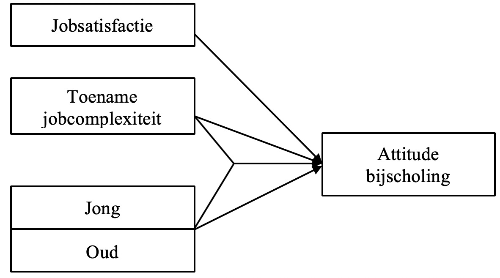
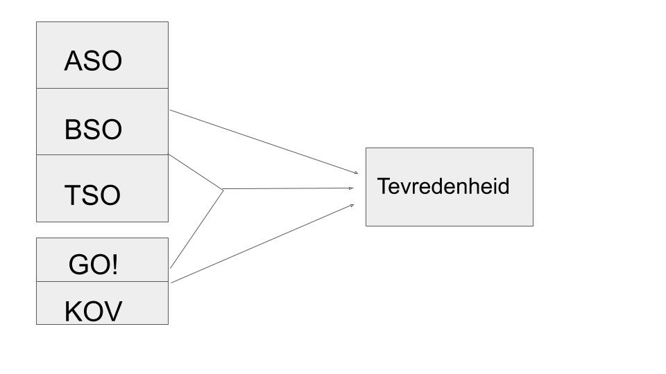
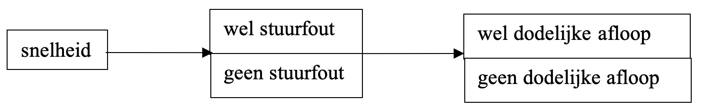
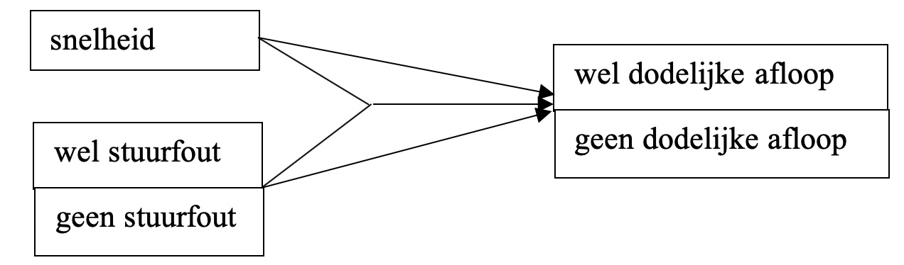

ZSO 1
OPDRACHTEN
Vraag 1
Jan doet onderzoek naar de voorspellers van een positieve attitude van arbeiders ten aanzien van het zich bijscholen via formele opleidingen. Deze attitude meet hij aan de hand van 10 vragen met likert-schaal (gaande van 1 (helemaal oneens) tot 5 (helemaal eens)). Vervolgens maakt hij een schaalscore ‘Attitude bijscholing’ door alle antwoorden per arbeider op te tellen en opnieuw te delen door 10 (iemand die bv. 10 keer helemaal oneens antwoordde krijgt de score 1 (= (10*1)/10). Hij onderscheidt volgende voorspellers: leeftijd (2 categorieën: ‘jong’ vs. ‘oud’), jobsatisfactie (somscore) en gepercipieerde toename in jobcomplexiteit de afgelopen 5 jaar (somscore). Bovendien veronderstelt hij dat gepercipeerde toename in jobcomplexiteit voor jonge arbeiders een sterkere invloed zal hebben dan voor oudere arbeiders.
Teken de onderzoeksvraag.
Welke analysetechniek is het meest gepast volgens jou?
[RESPONS ACHTERAAN DOCUMENT]
Vraag 2
Op een blauwe maandagavond vertelt nonkel Roger, die een hoge functie vervult binnen het Departement Onderwijs van het Ministerie van de Vlaamse gemeenschap, je tussen pot en pint het volgende verhaal:
“Zoals ge weet hebben we de inspectie van onderwijs waar inspecteurs werken. Die moeten eigenlijk toezicht houden op de werking van de scholen in het basisonderwijs en secundair onderwijs. De laatste tijd wordt er wel het één en het ander in de wandelgangen geroddeld. Ze zeggen dat de directeurs van ASO-scholen eigenlijk ontevreden zijn met de inspectie.
In BSO-TSO scholen is dat wat anders. Die zijn contenter met onze inspecteurs. Nu is het wel zo dat we meer mensen sturen naar de BSO-TSO scholen, ge weet wel – de PTI’s, STI’s, VTI’s en KTA’s. Die worden dus meer bezocht. Ook horen we klagen dat onze inspecteurs vooral de katholieke VTI’s gunstig gestemd zouden zijn, terwijl de directeurs van de KTA’s vinden dat ze stiefmoederlijk worden behandeld. Ik geloof dat dit niet waar is, maar kunt ge mij helpen om deze vraag te beantwoorden?”
Kan je onze arme Roger helpen door een onderzoeksstrategie uit te tekenen?
Stel je onderzoeksvraag visueel voor.
Welke analysetechniek zou je gebruiken om de vraag (vragen) te beantwoorden?
[RESPONS ACHTERAAN DOCUMENT]
Vraag 3
Eind 2018 ontstond er een kleine discussie over het beleid inzake verkeersveiligheid. Dat gaat er over het algemeen van uit dat overdreven snelheid een belangrijke oorzaak is van dodelijke verkeersongevallen, en dus is het beleid ook gericht op het beperken en bestraffen van overdreven snelheid.
Een politierechter verklaarde echter dat niet overdreven snelheid de belangrijkste oorzaak van dodelijk verkeersongevallen was, maar wel menselijke fouten (stuurfouten, onoplettendheid, …). Maar misschien is de tegenstelling niet zo eenvoudig. Het zou best kunnen dat beide elementen meespelen, maar wel op een complexe manier. Zou het niet kunnen dat precies bij hogere snelheden meer stuurfouten gemaakt worden?
Stel dat je beschikt over alle nodige statistieken over verkeersongevallen (al dan niet stuurfout gemaakt, welke snelheid, al dan niet doden ten gevolge van het ongeval,… ).
Formuleer de onderzoeksvraag om die meer genuanceerde hypothese te verifiëren.
Stel je onderzoeksvraag visueel voor.
Geef aan welke onderzoekstechniek je hier zou gebruiken.
[RESPONS ACHTERAAN DOCUMENT]
RESPONSEN
Vraag 1
Visueel ziet dit er als volgt uit:
Analysetechniek: Meervoudige regressie met dummyvariabelen (of ANCOVA).
Vraag 2
Je zou een tevredenheidsonderzoek kunnen opzetten bij een representatieve steekproef van TSO-BSO scholen. Een keuze die je daarbij dient te maken is wat je als je onderzoekseenheden gaat zien: scholen of individuen binnen scholen (leerkrachten). Roger spreekt zich daar niet echt over uit. We laten dit dan ook even in het midden. In het onderzoeksveld zal je zien dat er meestal voor de tweede optie wordt gegaan. Immers, wat is de tevredenheid van een school? Hoe ga je dat op een betrouwbare en valide wijze in kaart brengen.
Stel dat we er ook voor kiezen om individuen te bevragen binnen een representatieve steekproef van scholen, dan zitten we met een volgend probleem. Hoe gaan we tevredenheid meten? Door een simpele ja/nee vraag? Bv: Ben je tevreden over de doorlichting? Of door een hele schaal te bedenken? Daarmee doelen we op het verzinnen van een hele reeks van aspecten over de doorlichting en daarbij vragen in welke mate leraren daarover tevreden waren (bv. door een score gaande van 1 tot 5 toe te kennen). Deze laatste optie wordt ook een “Likert-schaal” genoemd. Het grote voordeel van deze werkwijze is dat je genuanceerdere informatie krijgt die van een kwantitatieve aard is (een schaalscore). Je zal dan ook merken dat deze werkwijze in de literatuur het vaakst gekozen wordt.
Indien we dus de gangbare werkwijze volgen, leidt dit tot het verzamelen van scores op een tevredenheidsschaal van individuen. Vervolgens zijn er 2 variabelen in het spel (onderwijsvorm en onderwijsnet). Bovendien alludeert nonkel Roger op een interactie-effect tussen beide (“Ook horen we klagen dat onze inspecteurs vooral de katholieke VTI’s gunstig gestemd zouden zijn, terwijl de directeurs van de KTA’s vinden dat ze stiefmoederlijk worden behandeld”). Visueel ziet dit er als volgt uit:

Analysetechniek: Dit zou je a.d.h.v. een ANOVA moeten analyseren.
Vraag 3
Eigen aan deze situatie is dat er nog geen sprake is van een duidelijke onderzoeksvraag!! Je zou dus best eerst zelf komen tot gerichte onderzoeksvragen. Hierbij zijn enkele mogelijkheden (alternatieven):
(OV1) Is het zo dat een hoge snelheid leidt tot een verhoogde kans op stuurfouten, wat op zijn beurt leidt tot een hogere kans dat een ongeluk dodelijk afloopt?
(OV2) Is het zo dat een stuurfout voornamelijk tot dodelijke accidenten leidt indien de snelheid hoog is?
(OV3) Leiden zowel hoge snelheid als het maken van stuurfouten tot een hogere kans op een dodelijk afloop van een ongeval en is het zo dat de combinatie van beiden de kans op een dodelijk ongeval nog versterkt?
Bij OV1 zitten we met een onderzoeksvraag met een tussenliggende variabele. Visueel ziet het onderzoeksformat er als volgt uit:

OV2 impliceert een interactie-effect tussen al dan niet een stuurfout en de snelheid. Je zou het format als volgt kunnen visualiseren:

We zijn, gezien de onderzoeksvraag, geïnteresseerd in het interactie-effect, maar moeten ook de enkelvoudige pijlen (hoofdeffecten) meenemen.
OV3 vertaalt zich in hetzelfde schema als OV2. Het verschil met OV2 is dat we nu in onze conclusies ook echt uitspraken over de hoofdeffecten vooropstellen, naast uitspraken over het interactie-effect.
Voor de eerste onderzoeksvraag doe je beroepen op een techniek die we niet gaan zien in deze cursus: padanalyse (padmodellen).
De tweede en derde onderzoeksvraag kunnen we wel aanpakken met één van de technieken die besproken staan in het schema. We zitten met een categorische afhankelijke variabele en een combinatie van een kwantitatieve en een kwalitatieve onafhankelijke variabele. Uit Tabel 1.5 lezen we af dat we dit kunnen analyseren met behulp van logistische regressieanalyse met dummyvariabelen. Deze analysetechniek komt echter ook niet aan bod binnen dit opleidingsonderdeel.